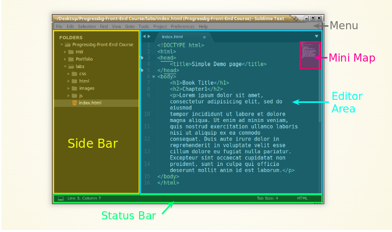

Sublime Text
Редактора, в който ще се влюбите
Created for
Created by
2015 - 2020,

Характеристики на Sublime Text3?
- Мулти-платформен: Linux, Windows, Mac OS X.
- Гъвкав, мощен, стабилен и изключително бърз!
- Може да се използва безплатно, без ограничения във функционалността и времето, но не е open-source!.
- Изчерпателна документация: Sublime Text Unofficial Documentation.
- Многобройна общност, създаваща непрекъснато множество полезни добавки за най-новите технологии: Package Control - The Sublime Text package manager.
- Python-базиран, с добре разработен и документиран API позволяващ да добавяте нова функционалност.
Инсталиране
От официалния сайт, където е последната версия: Sublime Text 3 - Download
Повече информация: ST3 installation notes
Запознаване с редактора
Основни панели
{kind=link}
Menu
- Основно меню на Sublime Text 3
- Повечето от опциите в менюто са достъпни и чрез Командната Палитра, което гарантира по-бърз достъп.
The sidebar
- Позволява елементарни операции с директории/файлове. Внимавайте с
Delete Folder, което изтрива безвъзвратно директорията от хард диска. - Показване/скриване
- Menu->View->Side Bar->Show/Hide Side Bar
- Open Files - списък с отворените файлове
- Menu->View->Side Bar->Show/Hide Open Files
- За повече възможности на Side Bar: SideBarEnhancements Package
The Editor Area
- Мястото, където пишем код : )
- Оцветяването се определя от
Color Scheme - Color Scheme се променя чрез:
- Preferences->Color Scheme...
- CTRL+SHIFT+P->UI: Select Color Scheme
- Могат да се инсталират допълнително Color Scheme, по същия начин както Пакетите
Minimap
- Показва карта на кода, в която се запазва текущото оцветяване на кода.
- Изключително полезна за бързо навигиране в по-големи файлове.
- Скриване/Показване
- Menu->View->Show/Hide Minimap
- CTRL+SHIFT+P => Toggle Minimap
Status Bar
- Лента със статуса :)
- Показва резултата от операциите, които се извършват. Като инсталиране на пакети и пр.
The Command Palette
- Предимства:
- Дава бърз достъп до всички команди в Sublime Text и инсталираните пакети.
- Филтриране/търсене по произволна част от низа (fuzzy search)
- Активиране:
- Чрез клавиатура: Ctrl+Shift+P
- Чрез мишка: Tools=>Command Palette...
Инсталиране на пакети (packages, plugins)
Package Control
- Чрез Package Control можем бързо да инсталираме и премахваме пакети в ST3
- Инсталиране:
- Активирайте командната палитра (Ctrl+Shift+P)
- В полето за търсене въведете: Install Package Control
Package Control Commands
Всяка от посочените команди е достъпна чрез командната палитра (CTRL+SHIFT+P)
Package Control: Install Package- Инсталира пакет от основния канал - необходима е Интернет връзка.
- Показва списък със всички налични, но не инсталирани пакети, от който можете да избере кой пакет да инсталирате
Package Control Commands
Package Control: Remove Package- Показва списък с всички инсталирани на системата пакети, от който можете да изберете кой пакет да бъде деинсталиран.
Package Control: List Packages- Показва списък с всички инсталирани на системата пакети
Теми и цветови схеми
- Color Scheme - касае визията на Editor Area и оцветяването на кода.
- Променя се чрез
Menu->Preferences->Color Scheme... - Theme - касае визията на SideBar,Status Bar и табовете.
- Променя се чрез
Menu->Preferences->Theme... - Съществуват множество теми и цветови схеми за Sublime, които лесно се инсталират чрез Package Control
Полезни пакети за Sublime Text 3
Полезни пакети за Sublime Text 3Настройки
Глобални настройки
- Всички настройки в ST3, се записват в JSON формат. Използват се 2 файла, които са достъпни от:
- Sublime Text 3 => Preferences => Settings
- Файлът, в който записваме промените е:
- Preferences.sublime-settings – User
- Това гарантира, че настройките ни ще се запазят дори и след ъпдейт на Sublime
- Голяма част (но не всички) от настройките на редактора са достъпни и от
Menu->Preferences. - Настройките за Пакети са достъпни от:
Preferences->Package Settings->"package"
Примерни потребителски настройки
{
"font_face": "Courier New",
"font_size": 11,
"draw_white_space": "all",
"rulers": [80],
"tab_size": 4,
"translate_tabs_to_spaces": true,
"show_encoding": true,
}
Клавишни комбинации (Keyboard Shortcuts)
- В Sublime Text 3 се използват множество клавишни комбинации, които ускоряват значително процеса на разработка.
- Списък със стандартните клавишни комбинации:
- Keyboard Shortcuts - Windows/Linux
- Keyboard Shortcuts - OSX
- Разбира се, ние можем да променим и да добавим нови комбинации.
- Отново се използват 2 файла (Default и User), достъпни чрез:
- Sublime Text 3 => Preferences => Key Bindings
- Детайлна информация: http://sublime-text-unofficial-documentation.readthedocs.io/en/latest/reference/key_bindings.html
Пример:
В Sublime Text 3 => Preferences => Key Bindings - User:
[
{ "keys": ["ctrl+shift+up"], "command": "select_lines", "args": {"forward": false} },
{ "keys": ["ctrl+shift+down"], "command": "select_lines", "args": {"forward": true} },
]
Работа с проекти (advanced )
- Проекта капсулира и запазва файловете и директориите с които работите.
- Голяма част, но не всички, от настройките на Sublime могат да се приложат отделно за всеки отделен проект. Например, в проект А можем да работим с цветова схема, различна от тази на останалите проекти.
- Работата с проекти драстично ускорява работата върху множество проекти
- Подробна информация за работа с проекти: Projects @Sublime Text Unofficial Documentation
Настройки за проект
Sublime Text 3 => Project => Edit Project.
Структурата на файла е описана тук: Sublime Text 3 Documentation: Projects
YouTube Tutorials
Sublime Text Basics: All the Best Features in One Video
Sublime Text Tutorial - 12 videos by LearnWebCode
Docs
These slides are based on
customised version of
framework